Modeling Using Variation
A pre-owned car dealer has just offered their best candidate, Nicole, a position in sales. The position offers 16% commission on her sales. Her earnings depend on the amount of her sales. For instance, if she sells a vehicle for $4,600, she will earn $736. As she considers the offer, she takes into account the typical price of the dealer's cars, the overall market, and how many she can reasonably expect to sell. In this section, we will look at relationships, such as this one, between earnings, sales, and commission rate.
Solving Direct Variation Problems
In the example above, Nicole’s earnings can be found by multiplying her sales by her commission. The formula tells us her earnings, come from the product of 0.16, her commission, and the sale price of the vehicle. If we create a table, we observe that as the sales price increases, the earnings increase as well, which should be intuitive. See Table 1.
| , sales prices | Interpretation | |
|---|---|---|
| $4,600 | A sale of a $4,600 vehicle results in $736 earnings. | |
| $9,200 | A sale of a $9,200 vehicle results in $1472 earnings. | |
| $18,400 | A sale of a $18,400 vehicle results in $2944 earnings. |
Notice that earnings are a multiple of sales. As sales increase, earnings increase in a predictable way. Double the sales of the vehicle from $4,600 to $9,200, and we double the earnings from $736 to $1,472. As the input increases, the output increases as a multiple of the input. A relationship in which one quantity is a constant multiplied by another quantity is called direct variation. Each variable in this type of relationship varies directly with the other.
Figure 1 represents the data for Nicole’s potential earnings. We say that earnings vary directly with the sales price of the car. The formula is used for direct variation. The value is a nonzero constant greater than zero and is called the constant of variation. In this case, and
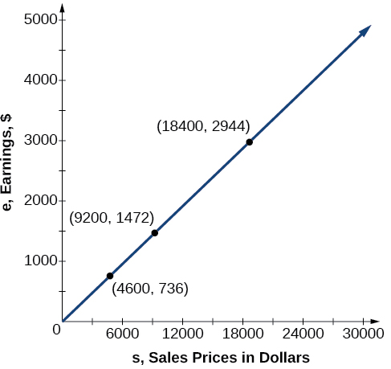
Solving a Direct Variation Problem
The quantity varies directly with the cube of If when find when is 6.
Solution
The general formula for direct variation with a cube is The constant can be found by dividing by the cube of
Now use the constant to write an equation that represents this relationship.
Substitute and solve for
Solving Inverse Variation Problems
Water temperature in an ocean varies inversely to the water’s depth. Between the depths of 250 feet and 500 feet, the formula gives us the temperature in degrees Fahrenheit at a depth in feet below Earth’s surface. Consider the Atlantic Ocean, which covers 22% of Earth’s surface. At a certain location, at the depth of 500 feet, the temperature may be 28°F.
If we create Table 2, we observe that, as the depth increases, the water temperature decreases.
| depth | Interpretation | |
|---|---|---|
| 500 ft | At a depth of 500 ft, the water temperature is 28° F. | |
| 350 ft | At a depth of 350 ft, the water temperature is 40° F. | |
| 250 ft | At a depth of 250 ft, the water temperature is 56° F. |
We notice in the relationship between these variables that, as one quantity increases, the other decreases. The two quantities are said to be inversely proportional and each term varies inversely with the other. Inversely proportional relationships are also called inverse variations.
For our example, Figure 3 depicts the inverse variation. We say the water temperature varies inversely with the depth of the water because, as the depth increases, the temperature decreases. The formula for inverse variation in this case uses
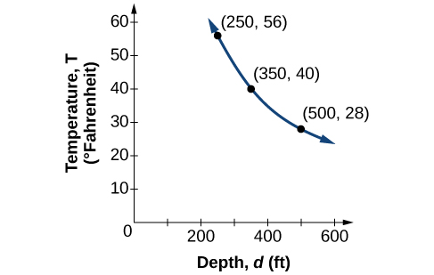
Writing a Formula for an Inversely Proportional Relationship
A tourist plans to drive 100 miles. Find a formula for the time the trip will take as a function of the speed the tourist drives.
Solution
Recall that multiplying speed by time gives distance. If we let represent the drive time in hours, and represent the velocity (speed or rate) at which the tourist drives, then Because the distance is fixed at 100 miles, Solving this relationship for the time gives us our function.
We can see that the constant of variation is 100 and, although we can write the relationship using the negative exponent, it is more common to see it written as a fraction.
Solving an Inverse Variation Problem
A quantity varies inversely with the cube of If when find when is 6.
Solution
The general formula for inverse variation with a cube is The constant can be found by multiplying by the cube of
Now we use the constant to write an equation that represents this relationship.
Substitute and solve for
Analysis
The graph of this equation is a rational function, as shown in Figure 4.
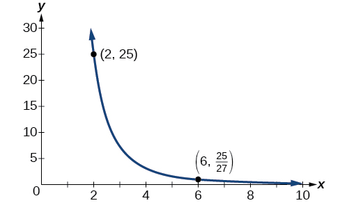
Solving Problems Involving Joint Variation
Many situations are more complicated than a basic direct variation or inverse variation model. One variable often depends on multiple other variables. When a variable is dependent on the product or quotient of two or more variables, this is called joint variation. For example, the cost of busing students for each school trip varies with the number of students attending and the distance from the school. The variable cost, varies jointly with the number of students, and the distance,
Solving Problems Involving Joint Variation
A quantity varies directly with the square of and inversely with the cube root of If when and find when and
Solution
Begin by writing an equation to show the relationship between the variables.
Substitute and to find the value of the constant
Now we can substitute the value of the constant into the equation for the relationship.
To find when and we will substitute values for and into our equation.
Key Equations
| Direct variation | |
| Inverse variation |
Key Concepts
- A relationship where one quantity is a constant multiplied by another quantity is called direct variation. See Example 1.
- Two variables that are directly proportional to one another will have a constant ratio.
- A relationship where one quantity is a constant divided by another quantity is called inverse variation. See Example 2.
- Two variables that are inversely proportional to one another will have a constant multiple. See Example 3.
- In many problems, a variable varies directly or inversely with multiple variables. We call this type of relationship joint variation. See Example 4.
Section Exercises
Verbal
What is true of the appearance of graphs that reflect a direct variation between two variables?
Solution
The graph will have the appearance of a power function.
If two variables vary inversely, what will an equation representing their relationship look like?
Is there a limit to the number of variables that can jointly vary? Explain.
Solution
No. Multiple variables may jointly vary.
Algebraic
For the following exercises, write an equation describing the relationship of the given variables.
varies directly as and when
varies directly as the square of and when
Solution
varies directly as the square root of and when
varies directly as the cube of and when
Solution
varies directly as the cube root of and when
varies directly as the fourth power of and when
Solution
varies inversely as and when
varies inversely as the square of and when
Solution
varies inversely as the cube of and when
varies inversely as the fourth power of and when
Solution
varies inversely as the square root of and when
varies inversely as the cube root of and when
Solution
varies jointly with and and when and ,
varies jointly as , , and and when , , , then
Solution
varies jointly as the square of and the square of and when and , then
varies jointly as and the square root of and when and , then
Solution
varies jointly as the square of the cube of and the square root of When ,, and
varies jointly as and and inversely as When , , and , then
Solution
varies jointly as the square of and the square root of and inversely as the cube of When
varies jointly as and and inversely as the square root of and the square of When , , and , then
Solution
Numeric
For the following exercises, use the given information to find the unknown value.
varies directly as . When , then . Find when
varies directly as the square of . When , then . Find when .
Solution
varies directly as the cube of . When , then . Find when .
varies directly as the square root of When , then . Find .
Solution
varies directly as the cube root of When , then . Find when ,
varies inversely with When , then . Find when .
Solution
varies inversely with the square of . When , then . Find when .
varies inversely with the cube of When , then . Find when .
Solution
varies inversely with the square root of When then Find when
varies inversely with the cube root of When then Find when
Solution
varies jointly as When and then Find when and
varies jointly as When and then Find when and
Solution
varies jointly as and the square of When and then Find when and
varies jointly as the square of and the square root of When and then Find when and
Solution
varies jointly as and and inversely as When and then Find when and and
varies jointly as the square of and the cube of and inversely as the square root of When and then Find when and
Solution
varies jointly as the square of and of and inversely as the square root of and of When and then Find when and
Technology
For the following exercises, use a calculator to graph the equation implied by the given variation.
varies directly with the square of and when
Solution
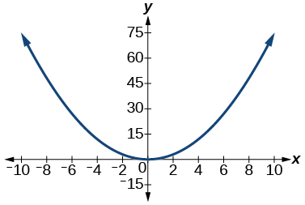
varies directly as the cube of and when
varies directly as the square root of and when
Solution
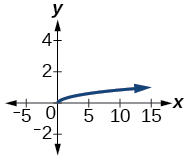
varies inversely with and when
varies inversely as the square of and when
Solution
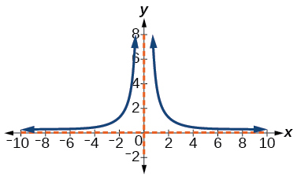
Extensions
For the following exercises, use Kepler’s Law, which states that the square of the time, required for a planet to orbit the Sun varies directly with the cube of the mean distance, that the planet is from the Sun.
Using the Earth’s time of 1 year and mean distance of 93 million miles, find the equation relating and
Use the result from the previous exercise to determine the time required for Mars to orbit the Sun if its mean distance is 142 million miles.
Solution
≈ 1.89 years
Using Earth’s distance of 150 million kilometers, find the equation relating and
Use the result from the previous exercise to determine the time required for Venus to orbit the Sun if its mean distance is 108 million kilometers.
Solution
≈ 0.61 years
Using Earth’s distance of 1 astronomical unit (A.U.), determine the time for Saturn to orbit the Sun if its mean distance is 9.54 A.U.
Real-World Applications
For the following exercises, use the given information to answer the questions.
The distance that an object falls varies directly with the square of the time, of the fall. If an object falls 16 feet in one second, how long for it to fall 144 feet?
Solution
3 seconds
The velocity of a falling object varies directly to the time, of the fall. If after 2 seconds, the velocity of the object is 64 feet per second, what is the velocity after 5 seconds?
The rate of vibration of a string under constant tension varies inversely with the length of the string. If a string is 24 inches long and vibrates 128 times per second, what is the length of a string that vibrates 64 times per second?
Solution
48 inches
The volume of a gas held at constant temperature varies indirectly as the pressure of the gas. If the volume of a gas is 1200 cubic centimeters when the pressure is 200 millimeters of mercury, what is the volume when the pressure is 300 millimeters of mercury?
The weight of an object above the surface of the Earth varies inversely with the square of the distance from the center of the Earth. If a body weighs 50 pounds when it is 3960 miles from Earth’s center, what would it weigh it were 3970 miles from Earth’s center?
Solution
≈ 49.75 pounds
The intensity of light measured in foot-candles varies inversely with the square of the distance from the light source. Suppose the intensity of a light bulb is 0.08 foot-candles at a distance of 3 meters. Find the intensity level at 8 meters.
The current in a circuit varies inversely with its resistance measured in ohms. When the current in a circuit is 40 amperes, the resistance is 10 ohms. Find the current if the resistance is 12 ohms.
Solution
≈ 33.33 amperes
The force exerted by the wind on a plane surface varies jointly with the square of the velocity of the wind and with the area of the plane surface. If the area of the surface is 40 square feet surface and the wind velocity is 20 miles per hour, the resulting force is 15 pounds. Find the force on a surface of 65 square feet with a velocity of 30 miles per hour.
The horsepower (hp) that a shaft can safely transmit varies jointly with its speed (in revolutions per minute (rpm)) and the cube of the diameter. If the shaft of a certain material 3 inches in diameter can transmit 45 hp at 100 rpm, what must the diameter be in order to transmit 60 hp at 150 rpm?
Solution
≈ 2.88 inches
The kinetic energy of a moving object varies jointly with its mass and the square of its velocity If an object weighing 40 kilograms with a velocity of 15 meters per second has a kinetic energy of 1000 joules, find the kinetic energy if the velocity is increased to 20 meters per second.
Chapter Review Exercises
You have reached the end of Chapter 3: Polynomial and Rational Functions. Let’s review some of the Key Terms, Concepts and Equations you have learned.
Complex Numbers
Perform the indicated operation with complex numbers.
Solution
Solution
Solve the following equations over the complex number system.
Solution
Quadratic Functions
For the following exercises, write the quadratic function in standard form. Then, give the vertex and axes intercepts. Finally, graph the function.
Solution
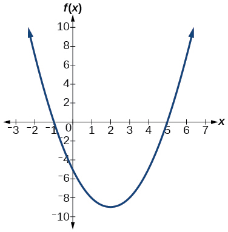
For the following problems, find the equation of the quadratic function using the given information.
The vertex is and a point on the graph is
Solution
The vertex is and a point on the graph is
Answer the following questions.
A rectangular plot of land is to be enclosed by fencing. One side is along a river and so needs no fence. If the total fencing available is 600 meters, find the dimensions of the plot to have maximum area.
Solution
300 meters by 150 meters, the longer side parallel to river.
An object projected from the ground at a 45 degree angle with initial velocity of 120 feet per second has height, in terms of horizontal distance traveled, given by Find the maximum height the object attains.
Power Functions and Polynomial Functions
For the following exercises, determine if the function is a polynomial function and, if so, give the degree and leading coefficient.
Solution
Yes, degree = 5, leading coefficient = 4
Solution
Yes, degree = 4, leading coefficient = 1
For the following exercises, determine end behavior of the polynomial function.
Solution
Graphs of Polynomial Functions
For the following exercises, find all zeros of the polynomial function, noting multiplicities.
Solution
–3 with multiplicity 2, with multiplicity 1, –1 with multiplicity 3
Solution
4 with multiplicity 1
For the following exercises, based on the given graph, determine the zeros of the function and note multiplicity.
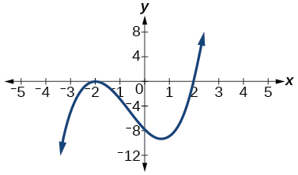
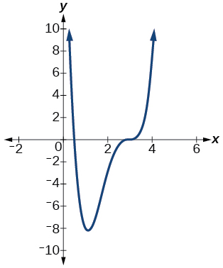
Solution
with multiplicity 1, 3 with multiplicity 3
Use the Intermediate Value Theorem to show that at least one zero lies between 2 and 3 for the function
Dividing Polynomials
For the following exercises, use long division to find the quotient and remainder.
Solution
with remainder 12
For the following exercises, use synthetic division to find the quotient. If the divisor is a factor, then write the factored form.
Solution
Solution
, so factored form is
Zeros of Polynomial Functions
For the following exercises, use the Rational Zero Theorem to help you solve the polynomial equation.
Solution
Solution
For the following exercises, use Descartes’ Rule of Signs to find the possible number of positive and negative solutions.
Solution
0 or 2 positive, 1 negative
Rational Functions
For the following rational functions, find the intercepts and the vertical and horizontal asymptotes, and then use them to sketch a graph.
Solution
Intercepts , Asymptotes
and
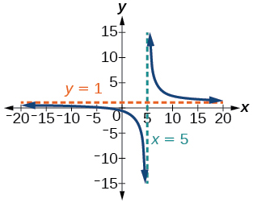
Solution
Intercepts (3, 0), (-3, 0), and , Asymptotes
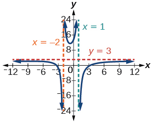
For the following exercises, find the slant asymptote.
Solution
Inverses and Radical Functions
For the following exercises, find the inverse of the function with the domain given.
Solution
Solution
Solution
Modeling Using Variation
For the following exercises, find the unknown value.
varies directly as the square of If when find if
Solution
varies inversely as the square root of If when find if
varies jointly as the cube of and as If when and find if and
Solution
varies jointly as and the square of and inversely as the cube of If when and find if and
For the following exercises, solve the application problem.
The weight of an object above the surface of the earth varies inversely with the square of the distance from the center of the earth. If a person weighs 150 pounds when he is on the surface of the earth (3,960 miles from center), find the weight of the person if he is 20 miles above the surface.
Solution
148.5 pounds
The volume of an ideal gas varies directly with the temperature and inversely with the pressure . A cylinder contains oxygen at a temperature of 310 degrees K and a pressure of 18 atmospheres in a volume of 120 liters. Find the pressure if the volume is decreased to 100 liters and the temperature is increased to 320 degrees K.
Chapter Test
Perform the indicated operation or solve the equation.
Solution
Solution
Give the degree and leading coefficient of the following polynomial function.
Determine the end behavior of the polynomial function.
Solution
Write the quadratic function in standard form. Determine the vertex and axes intercepts and graph the function.
Solution
, vertex , intercepts
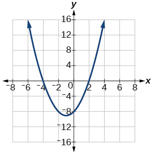
Given information about the graph of a quadratic function, find its equation.
Vertex and point on graph
Solve the following application problem.
A rectangular field is to be enclosed by fencing. In addition to the enclosing fence, another fence is to divide the field into two parts, running parallel to two sides. If 1,200 feet of fencing is available, find the maximum area that can be enclosed.
Solution
60,000 square feet
Find all zeros of the following polynomial functions, noting multiplicities.
Solution
0 with multiplicity 4, 3 with multiplicity 2
Based on the graph, determine the zeros of the function and multiplicities.
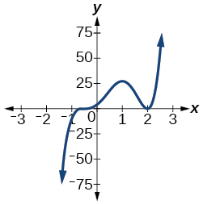
Use long division to find the quotient.
Solution
Use synthetic division to find the quotient. If the divisor is a factor, write the factored form.
Solution
. So factored form is
Use the Rational Zero Theorem to help you find the zeros of the polynomial functions.
Solution
(has multiplicity 2),
Solution
(has multiplicity 3),
Given the following information about a polynomial function, find the function.
It has a double zero at and zeroes at and . Its y-intercept is
It has a zero of multiplicity 3 at and another zero at . It contains the point
Solution
Use Descartes’ Rule of Signs to determine the possible number of positive and negative solutions.
For the following rational functions, find the intercepts and horizontal and vertical asymptotes, and sketch a graph.
Solution
Intercepts , Asymptotes .
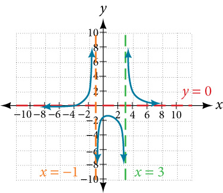
Find the slant asymptote of the rational function.
Solution
Find the inverse of the function.
Solution
Find the unknown value.
varies inversely as the square of and when Find if
Solution
varies jointly with and the cube root of If when and find if and
Solve the following application problem.
The distance a body falls varies directly as the square of the time it falls. If an object falls 64 feet in 2 seconds, how long will it take to fall 256 feet?
Solution
4 seconds
Analysis
The graph of this equation is a simple cubic, as shown in Figure 2.
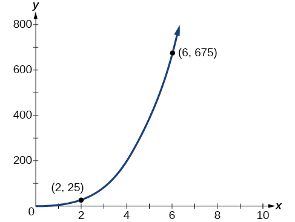